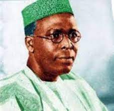
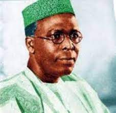
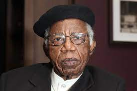
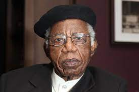
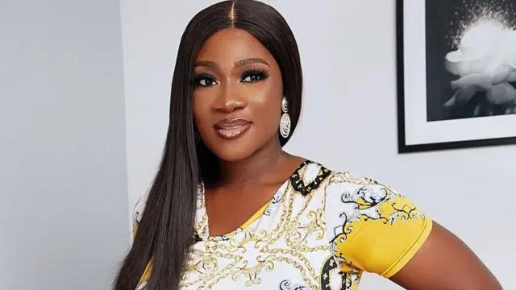

Geo-political zones in Nigeria
South-west
 

- Ogun state
- Lagos state
- Oyo state
- Osun state
South-east
 

- Imo state
- Abia state
- Anambra state
- Ebonyi state
North-central
- Benue state
- Kwara state
- Kogi state
- Nasarawa state
South-south

- Edo state
- Akwa ibom state
- Bayelsa state
- Delta state
North-west


- Sokoto state
- Kastina state
- Jigawa state
- Kano state
North-east


- Adamawa state
- Bauchi state
- Borno state
- Taraba state